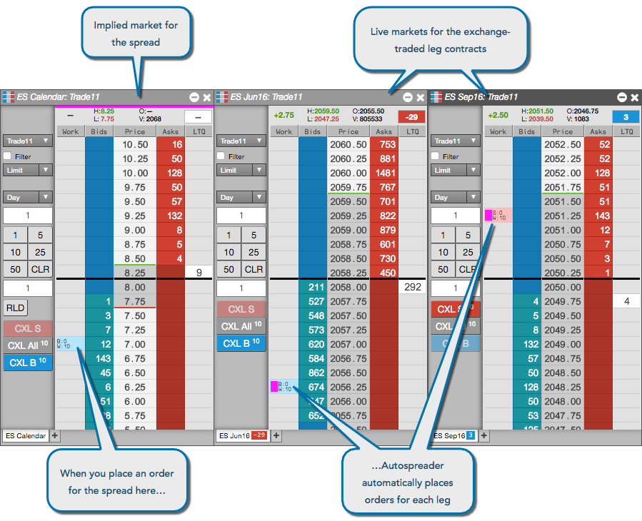
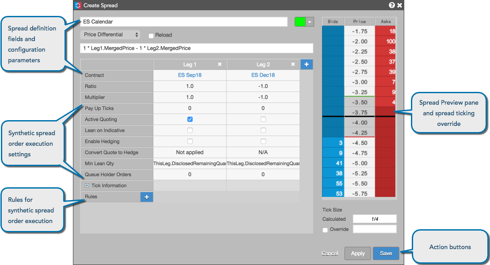
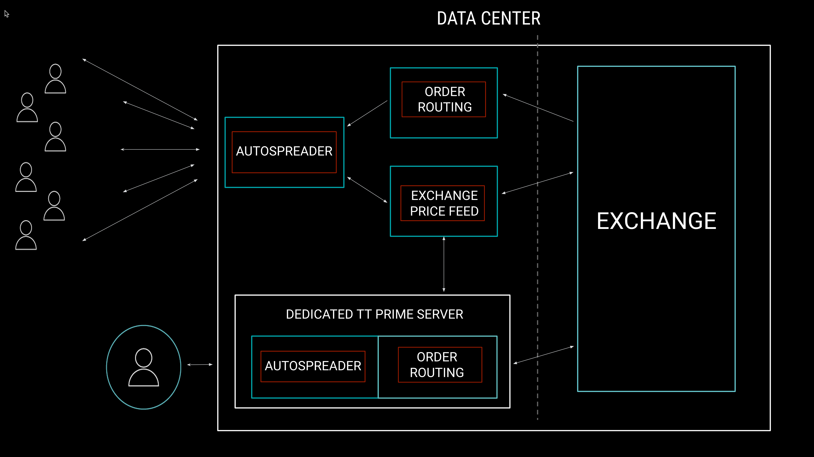

Autospreader in the X_TRADER and TT platforms allows you to create and trade your own synthetic calendar, inter-product, or inter-exchange spreads. However, there are some differences in Autospreader functionality between the two platforms, as well as some additional benefits to using Autospreader on TT, such as:

In X_TRADER, many of the Autospreader capabilities that were configurable in X_TRADER are now available as pre-configured Autospreader Rules integrated with Autospreader on the TT platform. These parameters were removed from the Autospreader configuration interface in TT and some others have been combined into a single parameter, which makes the interface in TT more streamlined and efficient.

The following table shows how spread configuration parameters in X_TRADER map to Autospreader Rules on the TT platform.
| X_TRADER parameter | Autospreader Rule | Notes |
|---|---|---|
| Basic Slop | (TT) Basic Slop | |
| Inside Smart Quote | (TT) Inside Smart Quote | |
| Smart Quote Limit | (TT) Inside Smart Quote with LIMIT | |
| Hedge Round | (TT) Hedge Round | |
| Max Order Move | (TT) Max Order Move | |
| Pre Hedge Rule | (TT) Minimum Increment Hedge, (TT) Send Hedge as Market Order, (TT) Hedge Price Limit, (TT) Liquidity Based Backoff Tick | In addition to (TT) Hedge Round and your own custom rules, TT provides additional pre-hedge rules that are evaluated and triggered before sending a hedge order into the market. |
| Post Hedge Rule | (TT) Time Based Go To Market, (TT) Ticks Away Based Go To Market, (TT) Liquidity Based Payup Tick | In addition to your own custom rules, TT provides additional post-hedge rules that are evaluated and triggered after sending a hedge order into the market. |
Note: The "Base Volume Lean" and "Offset Volume Multiplier" Autospreader parameters in X_TRADER have been combined in the "Minimum Lean Quantity" parameter in TT.
Autospreader in X_TRADER and TT both support this functionality, but they are configured differently on each platform. In X_TRADER, you set the Ratio parameter to "0" on a spread leg to use it solely as a pricing component in a spread.
In TT, you can configure this functionality by disabling both "Active Quoting" and "Enable Hedging" parameters in Autospreader.
Both platforms support selecting multiple accounts per spread order. In X_TRADER, you can open the routing configuration dialog box to select a broker or customer profile for the spread order, then select different customers and accounts for each leg of the spread.
In TT, you can also select individual accounts for each leg of a spread. To use multiple accounts in TT, select "Multi" as the account for the spread order, and select different accounts for each leg as needed. For example, you can use separate accounts on different exchanges to submit orders for cross-exchange spreads, or split trading between separate accounts and different brokers.
Autospreader Strategy Engine servers are co-located with the exchange matching engines in TT data centers for both X_TRADER and TT platforms. In TT, the optimal route to a co-located Autospreader Strategy Engine is based on the first leg of the spread, so you do not have to manually select a server when launching the spread like you did in X_TRADER.
Sharing (importing/exporting) spread configurations is also simpler in TT. You do not have manually copy and paste configuration files to/from X_TRADER client workstations in order to share synthetic spread configurations.
In addition to the efficiency in the configuration interface, Autospreader in TT includes the following additional functionality that is not available in X_TRADER:
Another benefit of using Autospreader in TT vs. X_TRADER is speed: Autospreader in TT is faster than Autospreader in X_TRADER. One reason for the increase in speed and reduction in hedge and requote latency is that the Autospreader service in TT is Linux-based vs. the Windows-based Autospreader server in X_TRADER. The Autospreader code was also rewritten and streamlined in TT, whereas Autospreader on the X_TRADER platform was written on top of the existing X_TRADER code base and introduced some additional hops on the wire.
In X_TRADER, there are some Autospreader parameters that were enabled by default and had to be checked for values by the Autospreader Strategy Engine. In TT, you have the choice to enable each parameter in a spread configuration. The Autospreader Strategy Engine in TT will ignore any parameters that aren't enabled or configured, so less processing time is required.
TT also provides latency data that was not provided in X_TRADER. The Audit Trail in TT displays actual realized latency in the TTLatency and ExchLatency columns.
Another benefit of using Autospreader in TT is the availability of the TT Prime premium service.

Using TT Prime provides the following benefits: